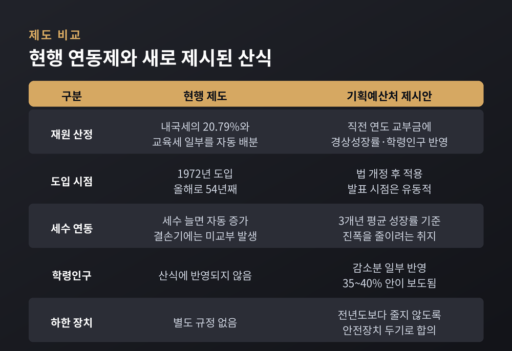
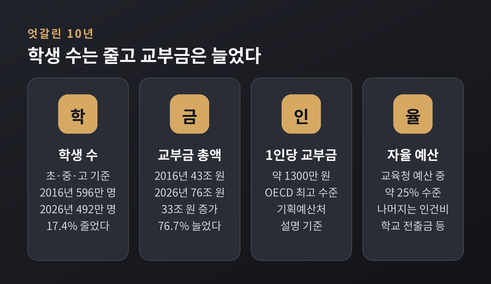
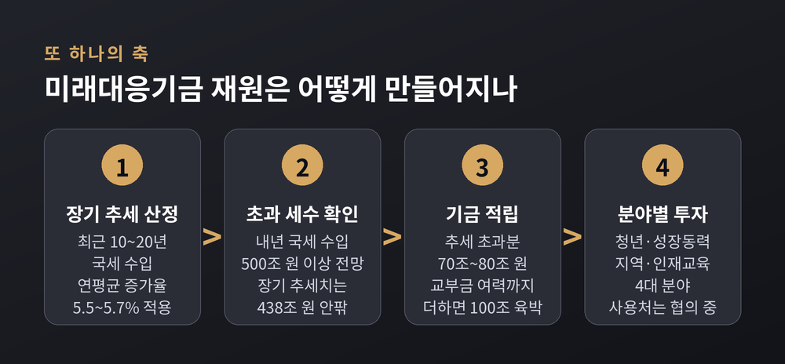
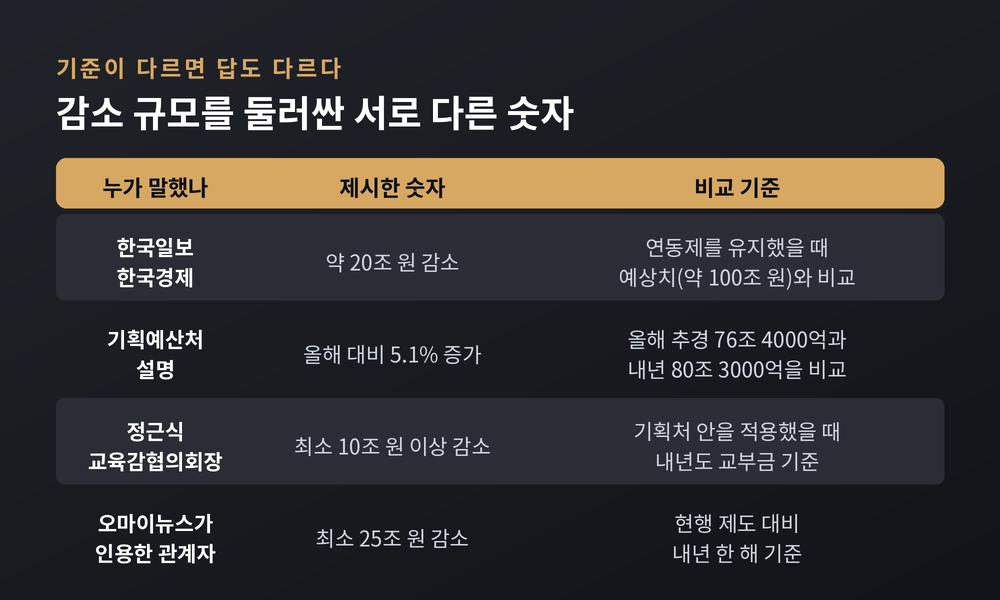
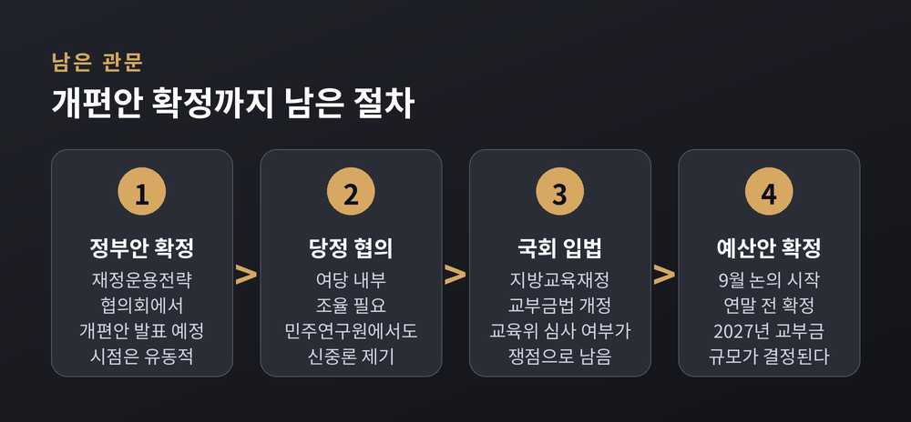

이번 글에서는 지방교육재정교부금의 '내국세 20.79% 자동 연동제' 폐지 논의를 정리해 보겠습니다.
1972년에 만들어진 배분 장치가 54년 만에 바뀔 수 있는 국면입니다.
기획예산처와 교육부·교육계가 어디에서 맞서고 있는지, 양쪽 논리를 나란히 놓고 살펴보겠습니다.
지방교육재정교부금은 흔히 '교육교부금'으로 줄여 부릅니다.
전국 17개 시·도교육청이 유치원과 초·중·고교를 운영하는 데 쓰는 돈입니다.
재원 구조가 독특합니다.
정부가 매년 걷는 내국세의 20.79%와 교육세 일부가 법에 따라 자동으로 넘어갑니다.
학생이 몇 명이든, 교육 수요가 어떻든, 세금이 늘면 교부금도 함께 늘어납니다.
이 구조가 1972년에 도입돼 올해로 54년째입니다.
기획예산처는 이 연동 규정을 삭제하는 지방교육재정교부금법 개정안을 추진하고 있습니다.
대신 직전 연도 교부금에 최근 3개년 평균 경상성장률과 학령인구 증감을 반영해
다음 해 총액을 산정하는 방식을 제시했습니다.
박홍근 기획예산처 장관은 8월 20~21일 첫 재정운용전략협의회에서
교육교부금 개편안과 미래대응기금 신설 방안을 함께 발표할 예정이었습니다.
다만 교육부와의 협의가 막판에 걸리면서 발표 시점이 유동적이라는 보도도 나왔습니다.
기획예산처는 8월 17일 설명자료에서 "전반적인 개편 방향에는 합의했고 세부 사항을 협의 중"이라고 밝혔습니다.

숫자를 보면 규모가 짐작됩니다.
올해 교육교부금은 추가경정예산 기준 76조 4000억 원입니다.
정부 총지출의 상당 부분이 이 한 줄의 법 조항으로 움직입니다.
한국일보 보도에 따르면 새 산식을 적용할 경우 내년 교부금은 약 80조 3000억 원으로 추산됩니다.
올해보다 5.1% 늘어나는 규모입니다.
반면 현행 연동제를 그대로 두면 내년 교부금은 약 100조 원에 이를 것으로 전망됩니다.
두 숫자의 차이가 약 20조 원입니다. 한국경제도 같은 규모를 보도했습니다.
여기서 논쟁의 성격이 갈립니다.
정부는 "올해보다 4조 원 가까이 늘어나는데 왜 삭감이라 하느냐"고 말합니다.
교육계는 "현행 제도라면 받았을 20조 원이 사라지는 것"이라고 말합니다.
같은 사실을 놓고 기준점이 다릅니다.
기획예산처의 출발점은 학령인구입니다.
초·중·고 학생 수는 2016년 596만 명에서 올해 492만 명으로 줄었습니다.
10년 사이 104만 명, 17.4%가 감소했습니다.
같은 기간 교육교부금은 43조 원에서 76조 원으로 76.7% 늘었습니다.
학생은 줄고 예산은 늘어난 셈입니다.
박홍근 장관은 7월 30일 한 유튜브 방송에서 이렇게 설명했습니다.
학생 1인당 교부금이 약 1300만 원으로 OECD 최고 수준이며,
교부금 총액과 1인당 금액을 줄일 생각은 없다는 것입니다.
"지난 20년간 증가해온 추세만큼은 앞으로도 보장하겠다"는 표현도 썼습니다.
교육계의 축소 주장에 대해서는 "오해 내지는 의도적인 비판"이라고 반박했습니다.
세수 변동성도 정부가 드는 근거입니다.
세수가 좋을 때는 초과 지원이, 나쁠 때는 미교부가 반복돼 왔습니다.
2021년과 2022년에는 초과 세수로 각각 6조 4000억 원, 11조 원이 추가로 내려갔습니다.
반대로 2023년에는 10조 4000억 원, 2024년에는 4조 3000억 원을 내려보내지 못했습니다.
성장률에 연동하면 진폭이 줄어든다는 것이 정부 설명입니다.
투자 배분 문제도 함께 거론됩니다.
박 장관은 고등교육 투자가 OECD 평균의 68~69% 수준에 그친다며,
영유아·고등·평생교육으로 재원을 돌리자는 취지라고 밝혔습니다.
"교육 분야 밖에 쓰겠다는 것이 아니라 교육 분야에 쓰겠다는 것"이라는 설명입니다.

교육부의 입장은 단순한 반대가 아닙니다.
개편 필요성 자체에는 공감하되, 연동제 폐지에는 반대한다는 쪽입니다.
교육부가 제시한 대안은 이렇습니다.
내국세 총액에서 미래대응기금 전출분을 뺀 나머지의 20.79%를 연동하는 방식입니다.
여기에 교부금 증가에 상한을 두는 안도 함께 냈습니다.
교육부 역시 학령인구 감소라는 현실을 산식에 반영한 셈입니다.
최교진 교육부 장관은 7월 21일 "내국세 연동 제도는 유지되어야 한다"고 밝힌 바 있습니다.
미래대응기금에 '교육계정'을 반드시 두고, 그 몫을 법률로 보장해야 한다는 것이 교육부 요구입니다.
교육계의 반발은 더 직접적입니다.
334개 교육 관련 단체가 '2026 교육교부금 개편 대응 긴급행동'을 꾸려
"교육 주체를 기만하는 개악을 중단하라"고 요구했습니다.
8월 10일에는 330여 개 단체가 청와대 앞에서 1박 2일 집회를 열었습니다.
국회 앞 천막 농성도 검토되고 있습니다.
교육감들의 논리는 "학생 수 감소가 교육비 감소를 뜻하지는 않는다"로 요약됩니다.
7월 29일 대한민국교육감협의회 공개토론회에서 나온 근거들은 구체적이었습니다.
정근식 대한민국교육감협의회장은 기획처 안대로 개편되면
내년도 교부금이 최소 10조 원 이상 줄어들 것이라고 주장했습니다.
이번 논의가 복잡한 이유는 교부금 개편이 신설 기금과 맞물려 있기 때문입니다.
미래대응기금은 반도체 호황 등으로 일시적으로 늘어난 세수를 한 해에 다 쓰지 않고
청년·성장동력·지역·인재교육 네 분야에 투자하는 기금입니다.
한국경제 보도에 따르면 정부는 내년 국세 수입을 '500조 원+α'로 보고 있습니다.
올해 추경 기준 415조 4000억 원에서 크게 늘어나는 수치입니다.
최근 10~20년 평균 증가율로 계산한 장기 추세치(438조 원 안팎)를 넘는 초과분이 기금 재원이 됩니다.
여기에 교부금 개편으로 생기는 여력을 더하면 활용 가능한 재원이 100조 원에 육박할 수 있다는 계산도 나옵니다.
당초 예상 규모가 20조 원이었던 점을 생각하면 격차가 큽니다.
문제는 이 기금을 어디에 쓰느냐입니다.
기획예산처는 초·중등을 제외한 영유아·고등·평생교육과 청년·성장동력에 집중하겠다는 입장입니다.
교육부는 초·중등 교육에도 쓸 수 있어야 한다며 별도 교육계정 설치를 요구합니다.

이 사안을 볼 때 주의할 대목이 있습니다.
감소 규모를 두고 나오는 숫자가 제각각이라는 점입니다.
기준점이 다르기 때문에 생기는 차이입니다.
'올해 예산과 비교하느냐, 현행 제도라면 받았을 금액과 비교하느냐'에 따라 결론이 달라집니다.
세수 전망을 어떻게 잡느냐도 변수입니다.
산식 자체도 아직 확정된 것은 아닙니다.
7월에 기획처가 제시한 안에서는 학령인구 변화율을 40% 반영하는 것으로 알려졌고,
8월 중순 보도에서는 학령인구 감소분의 35%를 반영하는 방안이 유력하다고 전해졌습니다.
협의 과정에서 조정된 것으로 보이지만, 최종안이 나오기 전까지는 단정하기 어렵습니다.
한 가지는 양측이 합의한 것으로 보입니다.
세수가 급격히 나빠지거나 학령인구가 크게 줄어도
교부금이 전년도보다는 줄지 않도록 하는 안전장치를 두기로 했다는 점입니다.

두 부처가 마지막까지 부딪히는 지점은 의외로 좁습니다.
교육부는 연동제를 폐지하더라도 20.79%에 준하는 재정을 확보하도록
법률에 그 숫자를 명시하자고 요구합니다.
16개 시·도교육감과 교육계를 설득하려면 최소한의 명분이 필요하다는 논리입니다.
기획예산처는 반대합니다.
특정 비율을 법에 못박으면 경제 상황에 따른 탄력적 재정 운용이 어려워지고,
사실상 같은 규모를 법으로 보장하면 연동제를 폐지하는 의미가 없어진다는 것입니다.
8월 14일 최교진 장관이 박홍근 장관에게 직접 전화를 걸어 최종 합의를 시도했지만 접점을 찾지 못했습니다.
이 과정에서 서로 '장관직을 걸겠다'는 말까지 오갔다고 전해집니다.
한 언론은 사설에서 "연동제를 끊으면서 액수는 보전한다면 이런 개편을 왜 하느냐"고 지적하기도 했습니다.
방향은 정해졌는데 마지막 한 줄에서 멈춰 선 셈입니다.
정리하면 남은 관문은 세 개입니다.
첫째, 정부안 확정입니다.
재정운용전략협의회를 통한 발표가 예정돼 있지만 시점은 유동적입니다.
둘째, 국회 입법입니다.
교부금 개편은 지방교육재정교부금법을 고쳐야 가능한 일입니다.
그런데 22대 국회 후반기 교육위원회는 구성이 늦어졌고, 상임위원장도 오래 공석이었습니다.
충분한 심사 시간 없이 예산 부수 법안으로 처리될 수 있다는 우려가 교육계에서 나오는 이유입니다.
셋째, 여당 내부 조율입니다.
여당 싱크탱크인 민주연구원에서도 개편에 신중해야 한다는 목소리가 나왔습니다.
교육계 반발이 정치적 부담으로 이어질 수 있다는 지적입니다.
내년도 예산안은 9월에 논의를 시작해 연말 전에 확정됩니다.
시간이 넉넉하지는 않습니다.

정리하면 이렇습니다.
예전에는 세금이 늘면 교육 예산도 자동으로 늘었습니다.
지금은 그 자동장치를 계속 둘 것인지가 논의 테이블에 올라와 있습니다.
정부는 학생이 줄어든 만큼 재정 배분을 다시 설계하자고 말합니다.
교육계는 학생이 줄어도 학교가 감당할 비용은 줄지 않는다고 말합니다.
두 이야기 모두 근거가 있고, 그래서 결론이 쉽게 나지 않습니다.
저는 이 문제가 "얼마를 줄이느냐"보다 "무엇을 위해 쓰느냐"의 문제에 가깝다고 봅니다.
연동제를 유지하든 산식을 바꾸든, 그 돈이 교실에서 어떤 변화를 만드는지는 별개의 질문입니다.
아직 어느 쪽도 그 질문에 충분히 답하지는 못했습니다.
54년 된 공식이 정말 바뀔 것인지 물으신다면, 방향은 이미 정해진 듯하다고 답하겠습니다.
다만 그 공식에 어떤 숫자가 들어갈지는, 아직 아무도 모릅니다.